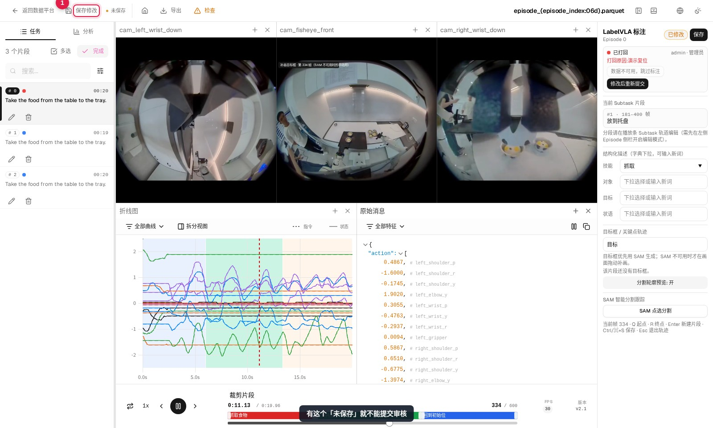
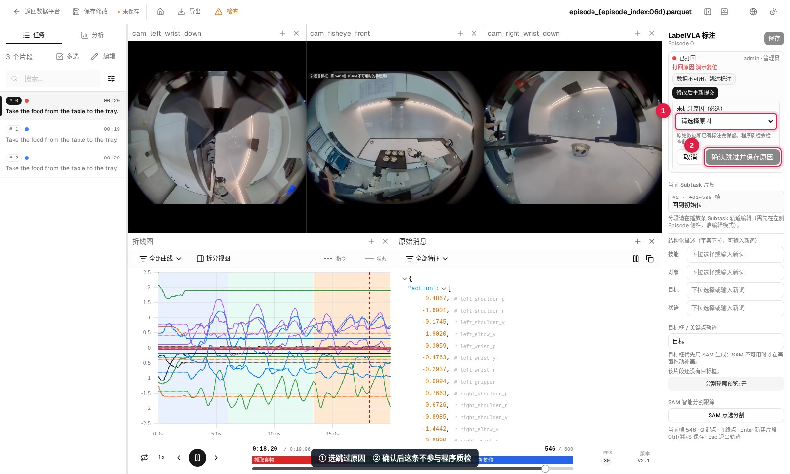

常见问题
按出现的位置分组。带截图的是实际页面上的样子，照着找就能对上。
保存与提交
顶部一直显示「未保存」，提交按钮是灰的
有改动还没写回任务版本。点顶部「保存修改」，等状态变成「已保存」；也可以按 Ctrl/⌘+S 先存当前这一条。

没保存就切换 Episode，改动会丢。页面不会拦你，切走前确认顶部不是「未保存」。
提交时提示「请先在 Studio 点击保存修改」
和上一条同一个原因，只是这次是在提交接口被拦下的。回工作区点「保存修改」，看到「已保存」再提交。
改了标注，别人那里看不到
标注先写在工作区副本里，必须点「保存修改」才会写回任务版本。审核员看到的是版本里的数据，保存前他看不到你的改动。
目标框与 SAM
右侧没有「SAM 点选分割」
常见三种情况：① 没选中片段（先点轨道上的片段）；② 这条 Episode 被标记为「已跳过」；③ 审核员身份打开的工作区是只读的。另外 SAM 服务没部署时按钮还在，但点选会报错，找管理员确认推理服务。
SAM 点完返回一个很大的框
没点中目标，模型把桌面、墙面当成了目标。点「放弃对象」换个位置再点，或换到视野更完整的相机；腕部相机视野窄，通常不如正面相机准。
点选后只有当前帧有轮廓
正常。其他帧要等「传播跟踪」跑完才生成，进度跑完会提示「已生成目标框：N 帧轨迹」。
提示「页面资源加载失败」
这不是 SAM 的问题：服务端更新过前端文件，浏览器还在用旧文件。点弹窗里的「刷新页面」即可，未保存的标注会丢，刷新前先保存。
任务流程
某条 Episode 用不了，没法标
用「数据不可用，跳过标注」并选择原因，这条就不参与程序质检。

跳过时必须选原因。没填原因的跳过，程序质检不会通过。
程序质检不通过
多半还有 Episode 没标注也没填跳过原因。管理员在任务详情页点「返回标注修正」（或「转回节点」）退回标注节点，补完重新提交，不用新建任务。
两个保存都点了，程序质检还是不过
看任务详情页的节点详情：程序质检的产出里会列出缺标注的 Episode，回到工作区按编号补；左侧 Episode 列表里没标过的也有状态标记。
审核员点「质检通过」没反应
只有该任务的审核负责人或管理员能点。按钮根本看不到，说明你不是这个任务的审核人。
账号
| 情况 | 处理 |
|---|---|
| 首次登录被要求改密码 | 正常：新账号和管理员初始化时都要求先改密，新密码至少 6 位 |
| 管理员密码忘了 | 默认 admin123（首次部署未改密时为 admin）；都进不去就联系部署方重置数据库里的账号 |
| 看不到分配给我的任务 | 任务列表默认按状态筛选，切到「全部」再找；也确认登录的是自己的账号 |